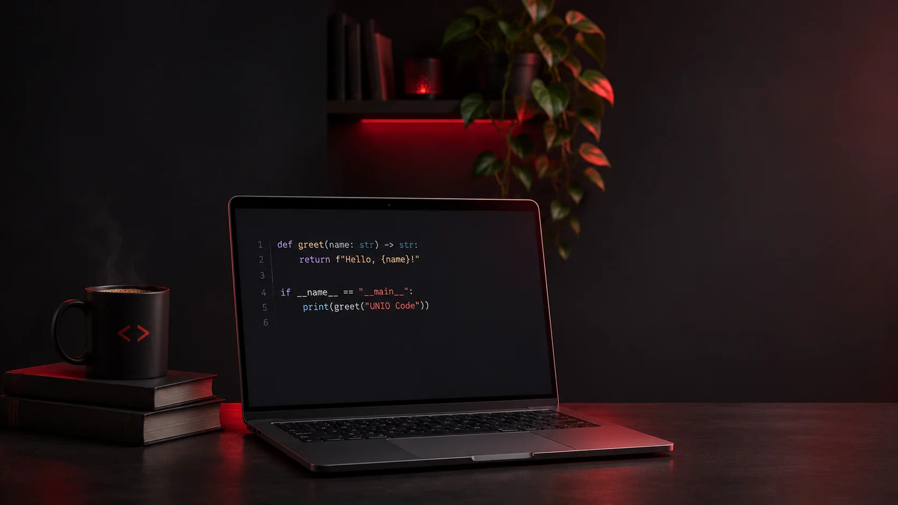
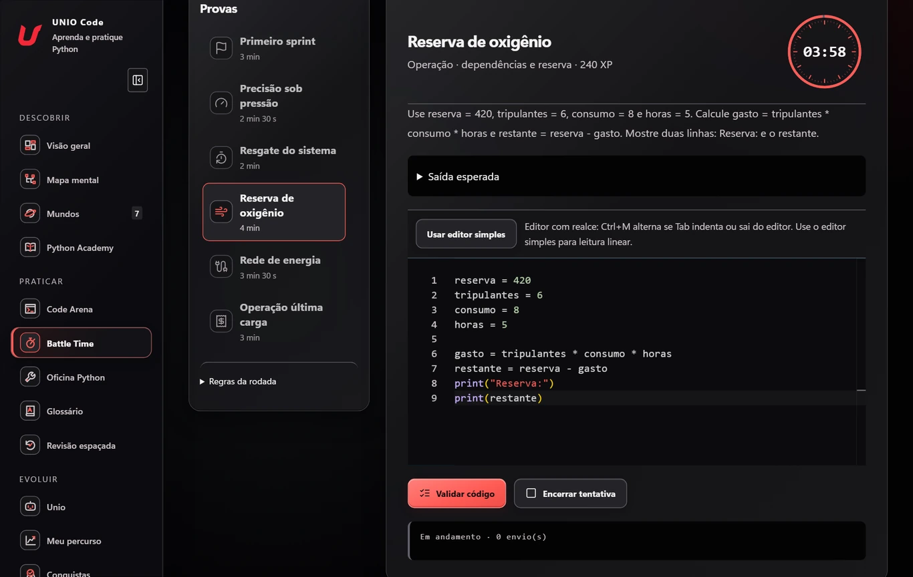

Leia e altere um exemplo
Na Python Academy, acompanhe uma condição linha por linha. Depois mude uma entrada e tente prever a saída.

Altere um exemplo, compare as saídas e corrija sua solução no mesmo editor. O UNIO Code é um aplicativo da NSEC Tech para Windows, em beta.
Você já guardou o nome do piloto. Escolha a linha que junta o prefixo ao nome e produz a saída abaixo.
nome = "Nova"print("Piloto: " + nome) junta o prefixo à variável e preserva o espaço depois dos dois-pontos.
Quer continuar no aplicativo? Peça o aviso de lançamento.
Amplie uma tela para ler o código e explorar os detalhes.



Na Python Academy, acompanhe uma condição linha por linha. Depois mude uma entrada e tente prever a saída.
Na Code Arena, resolva desafios no editor. No Battle Time, o cronômetro acrescenta um limite a cada rodada individual.
Nas oficinas, rode sua solução com entradas diferentes. Compare a saída esperada com a obtida e corrija o caso que falhou.
O percurso distingue acertos com ajuda de soluções independentes. A revisão espaçada traz de volta os conceitos que você precisa praticar.
A demonstração acima funciona no navegador. O aplicativo completo está em beta para Windows x64.
As aulas, o mapa, a revisão e os exercícios com simulador funcionam no aplicativo com WebView2. Só as oficinas com execução real e o laboratório precisam de Docker Desktop, Node.js e do pacote do executor. Veja o passo a passo de instalação.
Ela identifica a licença e permite sincronizar seu estudo. O progresso também fica no computador. Você pode pausar a sincronização ou exportar um backup nas Preferências.
A licença da edição é de compra única, associada à conta Google usada no pedido. Confira os termos de uso para entender o acesso durante a beta.
Battle Time já oferece desafios individuais. As disputas online 1v1 e o mentor com IA online estão planejados. A orientação disponível na beta usa conteúdo local.
Quer saber quando o download público abrir? Peça um aviso à NSEC Tech. Usaremos o endereço do remetente para avisar você uma vez.
Revise a mensagem no seu aplicativo de e-mail e envie. Se preferir usar o webmail, escreva para suporte@nsectech.com.br com o assunto “Aviso de lançamento do UNIO Code”.
Como usamos seu e-mailSe uma atividade falhou, conte em qual tela você estava, o que tentou e qual mensagem apareceu.
Escreva pelo seu aplicativo de e-mail.